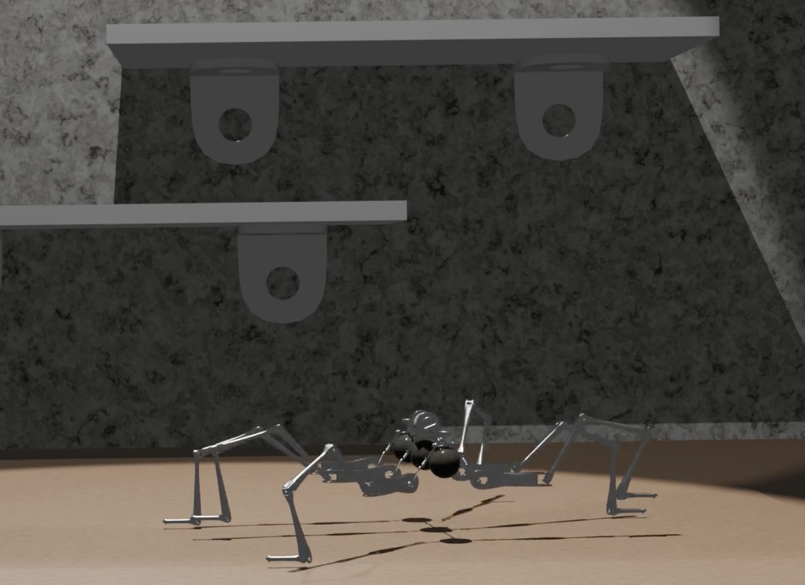

More info ! ! !
filler info tekst Dette er en kort Blender-animasjon som jeg lagde ved hjelp av et Blender-kit. I kittet hadde jeg tilgang til mange ulike robotdeler som jeg kunne sette sammen til en modell. Noen av modellene hadde også ferdige rigger, noe som gjorde det lettere å animere bevegelsene. Jeg brukte disse delene til å bygge en robot og lage en enkel animasjon der roboten beveger seg. Prosjektet hjalp meg med å lære mer om modellering, rigging og animasjon i Blender. ☾